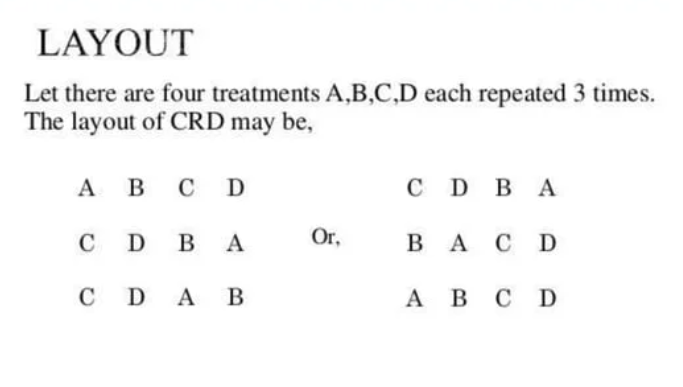
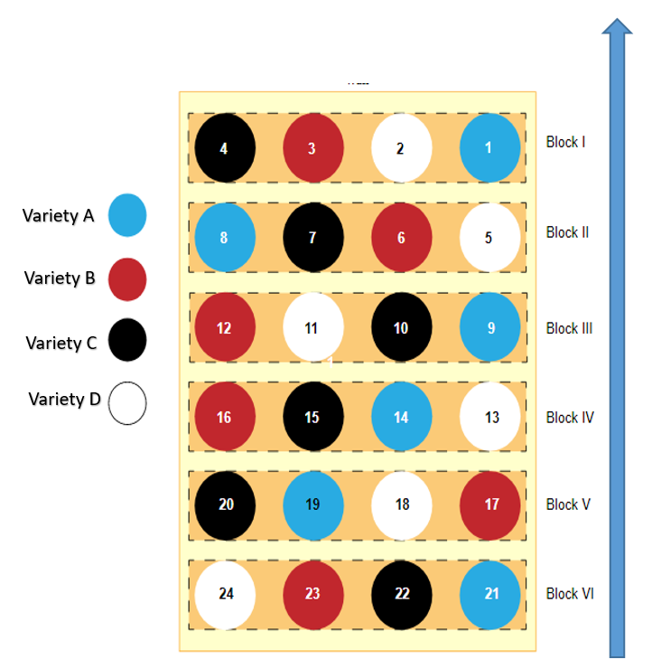
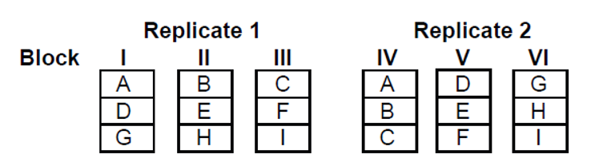
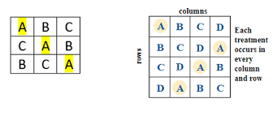
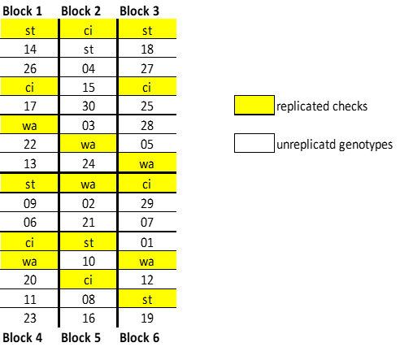
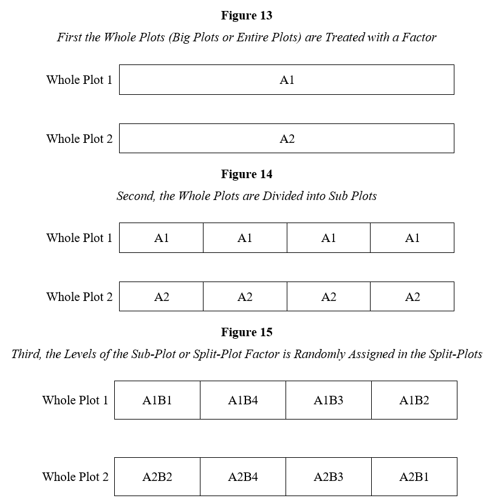
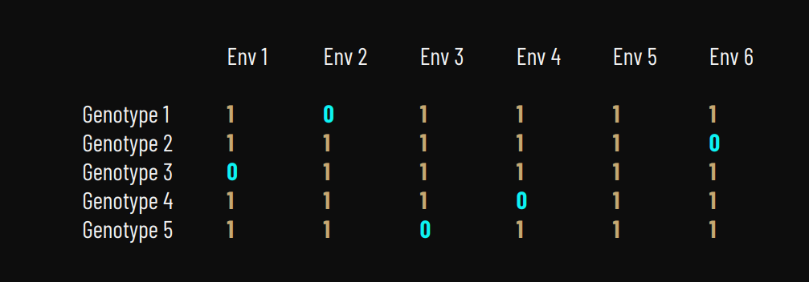

#design.crd(trt, r, serie = x, seed = yyy) #<<
Design of Experiment
Introduction
Experimental design pertains to the way participants are assigned to various groups within an experiment. It is a thorough blueprint for gathering and utilizing data to uncover causal relationships. By meticulously strategizing, experimental design enables your data collection endeavors to effectively detect effects and assess hypotheses that address your research inquiries. Statistical design of experiments refers to the process of planning the experiment so that appropriate data will be collected and analyzed by statistical methods, resulting in valid and objective conclusions. Typically, the goal is to determine the impact that an independent variable has on a dependent variable. A well-designed experiment is important because the results and conclusions that can be drawn from the experiment depend to a largely on the way the data were collected. In experimental design it is important to identify the sources of variation. The specific one chosen in an experimental design will be determined by the design’s objective.
A design is selected for an experiment based on the materials or treatments as well as the plots available for the experiment. Two main groups of designs are often used in breeding experiments. They are the complete block designs and the incomplete block designs.
All experiments have certain things in common, so designing an experiment usually includes the following steps. You must decide what question you want to have answered. This is the goal, or objective, of the experiment. The goal of the experiment will dictate what to include in the experiment to help you answer your question. The individual things that you wish to test in your experiment are called “treatments” and the physical areas to which the treatments are applied are called “plots.” Then you need to decide how the treatments should be physically arranged in the field. Technically, this is what is called the “experimental design.”
The objectives must be clearly stated as questions that need to be answered; hypotheses to be tested, and effects to be estimated. It is necessary to classify the objectives as major or minor since certain experimental designs give greater precision for some treatment comparisons than others.
Principles of Experimental Design
There are three basic principles pf experimental design, these include:
Replication: Two or more experiments using different experimental units, but with the same factor or independent variable settings. NB: Due to changes in lurking variables and inherent variations in experimental units, the measured dependent variable may differ among replicate runs. Replication entails duplicating experimental units or treatments to accommodate variability within the experiment. This practice enhances the accuracy of estimates and enables more robust statistical analysis. The number of replications is usually dependent on cost and time of experimentation. However, the smaller the size of difference expected to be detected, the higher the number of replicates required.
Replication is necessary because all test plots are not identical, and that leads to variation in the data you collect; you will not get the same results from two plots that received the same treatment.
Randomization: Is the process of randomly assigning treatments to experimental units. As a result of the random process, every treatment factors has the same probability. By randomly assigning experimental units to treatments, randomization enhances the reliability of experimental outcomes by minimizing the influence of extraneous variables. Randomization is the allocation of treatments to units such that the probability that a particular treatment will be allocated to a particular unit is the same for all treatments. In plant breeding experiments, two commonly employed randomization methods include Latin Square Designs and Randomized Complete Block Designs (RCBD).
Blocking (error control): Is the procedure for gathering similar experimental units into a relatively homogeneous group. Blocking consists of grouping experimental units into homogeneous blocks according to factors that could affect the response variable. This approach mitigates experimental error by addressing variability related to specific factors, such as soil type or field location. Often blocking is used to reduce or eliminate the variability transmitted from nuisance factors—that is, factors that may influence the experimental response but in which we are not directly interested. In field experiments where substantial variation within an experimental field can be expected, significant reduction in experimental error is usually achieved with the use of proper blocking.
In plant breeding, we do consider another vital principle of experimental design. This is the interaction effects.
- Interaction Effects: Interaction happens when the impact of one independent variable varies depending on the level of another independent variable. Put differently, the effect of one independent variable is not consistent across all levels of the other independent variable. In plant breeding, interaction effects refer to how the performance or expression of a particular trait (dependent variable) varies depending on the combination of different factors or conditions (independent variables). These factors can include genetic traits (genotypes), environmental conditions (such as temperature, soil type, or moisture), management practices (like fertilizer application or pest control), or their combinations.
Applications of Experimental Design in Plant Breeding
Experimental design can be used in plant breeding such as:
Genotype x Environment Interaction (G x E) studies: Genotype by Environment (G × E) interaction is crucial in plant breeding, as the performance of a genotype can differ across various environmental conditions. DoE allows breeders to evaluate G × E interaction through multi-locational trials conducted under diverse agro-climatic conditions. This approach aids in identifying genotypes that exhibit broad and specific adaptation, enabling breeders to develop cultivars that are more stable and productive.
Optimization of Breeding: Experimental design enables the refinement of breeding strategies by assessing the effectiveness of different selection methods, breeding techniques, and combinations of traits. Through systematic testing of various breeding approaches, breeders can pinpoint the most efficient strategies to achieve specific breeding goals, such as enhancing disease resistance, improving yield, or increasing nutritional quality.
Optimization of Field Management Practices: Aside from genetic factors, crop performance is significantly impacted by environmental management practices such as irrigation, fertilization, and pest control. Experimental design enables breeders to enhance field management practices through controlled experiments that evaluate the effects of various agronomic techniques on crop yield, quality, and resource utilization efficiency.
Stress Tolerance Screening: Given the escalating challenges presented by climate change and environmental pressures, there is an increasing demand to cultivate crop varieties that exhibit heightened stress tolerance. Experimental design supports stress tolerance screening by allowing breeders to methodically assess the performance of diverse germplasm under stressful conditions. By pinpointing genotypes with superior stress resilience and comprehending the underlying physiological mechanisms, breeders can cultivate resilient cultivars capable of thriving in challenging environments.
The application of experimental design in plant breeding can result in:
- Improved accuracy of decision making
- Reduced variability
- Reduced overall cost
- Compare resistant to drought
Guidelines for Designing an Experiment
The following are the guidelines in designing of experiment
- Define Objectives - Hypothesis
- Identify Experimental Units
- Define Measurable Response – Dependent Variable
- List Factor/Independent & Lurking Variables
- Run Pilot Tests
- Make a Flow Diagram of Experimental Procedure
- Choose Experimental Design
- Determine the number of Replicates Required
- Randomize the Experimental Condition to Experimental Units
- Describe a Method for Data Analysis
- Timetable and Budget for Resources Needed to Complete the Experiments

Definition of Terms
Experiment (Run): A procedure in which the researcher modifies at least one of the variables under investigation and then examines the results.
Experimental Unit (EU): Item that is being studied and on which something is modified. Experimental unit is the smallest thing that is measured. It may be a plot, an animal, a tree, group of trees, a plant, a person, etc., receiving a treatment.
Sub-Sample/Sub-Unit/Observational Unit: It is formed when the experimental unit is split after the action has been performed on it. NB: Sub-samples or sub-units of the same experimental unit are usually correlated and should be averaged before analysis.
Treatment Factor (Independent Variable): Variable under investigation/control that is kept at near or perfect value, or level during experiment.
Background/Lurking Variable: Variable the experimenter is unaware of or unable to control that could affect the outcome of the experiment.
Response (Dependent Variable): The feature of the experimental unit that is measured after each experiment or runs. NB: The size of the responses is influenced by the settings of the independent variables or factors, as well as any hidden variables.
Experimental Error: The variation between the observed response for a specific experiment and the long run average of all tests conducted with the same independent variables or factors. NB: Because of background or lurking variables, experimental errors are not equal to zero.
Effect: The change in the response variable that is caused by change in the treatment factor or independent variable. NB: It’s termed calculated effect when it’s computed after an experiment from observed data, while it’s called effect size when it’s determined before an experiment.
Fixed Effect: We have a fixed effect if the treatments are well defined and easily replicable and are expected to yield the same impact on average in each replicate. The model is called a fixed effect model.
Random Effect: We have a random effect if the treatments cannot be considered to come from a predefined or known set, they are supposed to be a random sampling from a larger population of possible treatments. The model is called a random effects model.
Block Design: In many experiments, the available experimental units are grouped into blocks with similar characteristics to mitigate the impact of potential sources of variability. This approach is known as block design.
Complete Block Design: The number of experimental units in a block is called the block size. If size of block is the same as the number of treatments and each treatment in each block is randomly allocated, then it is a full replication, and the design is called a complete block design.
The choice of experimental design to study the source of variability depends on the number of sources under study. The appropriate experimental design to study cause and effect relationship depends on:
- Type & number of treatment factors
- Degree of homogeneity of experimental units
- Ease of randomization
- Ability to block experimental units into homogeneous groups
The final experimental design chosen will determine the following
- How data will be collected
- Model to be fit to analyze the data
- Data interpretation
- Conclusions drawn from experiment
Some standard designs that are frequently used are:
- Completely randomized design (CRD)
- Randomized complete block design (RCBD)
- Incomplete block design (IBD)
- Lattice and Alpha design
- Latin Square Design
- Augmented design
- Split plot design
- Sparse Testing
- P-rep Design
Standard Designs
Here, we shall identify some designs commonly used in field experiments. We shall outline the design features and the most auspicious situation or environment; we shall also specify the relevant statistical model because specification of the model is always an element of experiment design; there is always the need to construct the model and sketch the analysis of variance as part of the design of the experiment.
Completely Randomized Design
This is the simplest of all experimental designs. A completely randomized design (CRD) refers to a design where the experimenter randomly assigns experimental units to treatments, so that each experimental unit has the same chance of receiving any one treatment. This design is employed in experiments that do not involve blocking factors with homogeneous experimental units.
The layout of a CRD is as shown below.

Example
The basic R syntax for CRD is
Arguments
trt: Treatmentsr: Replicationsserie: number plot, 1: 11,12; 2: 101,102; 3: 1001,1002seed: seed
Lets see an example
#|message = FALSE
#|eval=TRUE
#Load libraries
library(tidyverse) ── Attaching core tidyverse packages ──────────────────────── tidyverse 2.0.0 ──
✔ dplyr 1.1.4 ✔ readr 2.1.5
✔ forcats 1.0.0 ✔ stringr 1.5.1
✔ ggplot2 3.5.1 ✔ tibble 3.2.1
✔ lubridate 1.9.3 ✔ tidyr 1.3.1
✔ purrr 1.0.2
── Conflicts ────────────────────────────────────────── tidyverse_conflicts() ──
✖ dplyr::filter() masks stats::filter()
✖ dplyr::lag() masks stats::lag()
ℹ Use the conflicted package (<http://conflicted.r-lib.org/>) to force all conflicts to become errorslibrary(agricolae)
################Completely Randomized Design - CRD####################
#Planning CRD
trt <- c("G1","G2","G3","G4","G5")
plan <- design.crd(trt,3, seed=7638)
plan <- plan$book
View(plan)
# write out the plan
write_csv(plan, file = "CRDplan.csv") Randomized Complete Block Design
Randomized complete block design (RCBD) is the most used of the experiment designs. The design is used when plots can be grouped into blocks such that units in each block are homogenous and the number of units in each block is the same as the number of treatments in the experiment. The design is especially suited for field experiments where the number of treatments is not large and there exists a conspicuous factor based on which homogeneous sets of experimental units can be identified. The primary distinguishing feature of the RCBD is the presence of blocks of equal size, each of which contains all the treatments. The blocks of the experimental units should be uniform as possible so that the observed differences between treatments will be largely due to true differences between treatments. A completely randomized block design will fully replicate all treatments in grouped homogeneous blocks. In field research, location is often a blocking factor. RCBD helps reduce variability caused by difference between blocks, allowing for more precise estimation of treatment effects.
The layout for RCBD is as shown below

Example
The basic R syntax for RCBD is
#design.rcbd(trt, r, serie = x, seed = yyy) #<<Arguments
trt: Treatmentsr: Replications or blocksserie: number plot, 1: 11,12; 2: 101,102; 3: 1001,1002seed: seed
Lets look at an example
##############Randomized Complete Block Design - RCBD###################### #Planning RCBD
trt1 <- c("A","B","C","D","E")
plan2 <- design.rcbd(trt1, 4, seed = 161)
plan2 <- plan2$book
View(plan2)
# write out the plan
write_csv(plan2, file = "RCBDplan.csv")Incomplete Block Design
In earlier designs, we assumed that each block contains all treatments. When the number of treatments is large, it may not be possible to get enough homogenous plots to contain all the treatments. Block designs which have blocks of size less than the number of treatments are called Incomplete Block Designs.
Incomplete block designs (IBD) prove beneficial when time and/or space constraints prevent monitoring all treatments simultaneously. They enable experiments to be conducted in stages, facilitating more manageable implementation. Moreover,incomplete block designs can effectively minimize experimental error, offering a higher level of precision in treatment comparisons compared to complete block designs.
This occurs when the number of treatments is so large that a full replication in each block makes it too heterogeneous with respect to the characteristic under study, then smaller but homogeneous blocks can be used. In such a case, the blocks do not contain a full replicate of the treatments. Experimental designs with blocks containing an incomplete replication of the treatments is called incomplete block design.
The incomplete block design can be considered under two categories, a balance incomplete block design and an unbalanced incomplete block design. A balanced incomplete block design ensures that all treatments are compared with equal precision, as each pair of treatments occurs together an equal number of times. An unbalanced incomplete block design is suitable for experiments conducted in stages. It allows for a smaller-scale experiment, albeit with reduced precision, as not every treatment pair occurs equally. Increasing the number of repetitions in an unbalanced incomplete block design enhances precision. Despite replication, an unbalanced design typically results in a smaller experiment compared to a balanced design.
The layout for balanced and unbalanced incomplete block design is as shown below:
Let’s just consider square lattices, where the number of genotypes is a perfect square, for example 9, 16, 25, 144 or 900. In a square lattice, the block size is fixed as the square root of the number of genotypes. Example: with 225 genotypes the blocks would be of 15 plots each. Suppose that 9 genotypes are to be evaluated, each to be replicated twice. This permits us to use 2 replicates in a 3x3-lattice arrangement, prior to randomization. Once you lunch the library(agricolae), the function design.lattice generate the lattice design and design.alpha to generate the alpha design.

Lets see an example
Alpha and Lattice are two examples of incomplete block design. We will look at these two designs.
Example of Square Lattice Design (SLD)
The basic R syntax for SLD is
#design.lattice(trt2, r=x, seed = yyy)Arguments
trt: treatmentsr: r = 2(simple) or r = 3(triple) latticeserie: number plot, 1: 11,12; 2: 101,102; 3: 1001,1002seed: seed
#Planning Row Column Design - SLD
trt2 <- 1:81
plan3 <- design.lattice(trt2, r=2, seed = 123)
Lattice design, simple 9 x 9
Efficiency factor
(E ) 0.8333333
<<< Book >>>plan3 <- plan3$book
View(plan3) # write out the plan write_csv(plan3, file = "SLDplan.csv")Example of Alpha design
The basic R syntax for Alpha Design is
#design.alpha(trt,k,r,serie=2, seed=seed)Arguments
trt: treatmentsk: size blockr: Replicationsserie: number plot, 1: 11,12; 2: 101,102; 3: 1001,1002seed: seed
#Planning an Alpha design - AD
#30 test materials
trt <- 1:30 #trt <- letters[1:12]
t <- length(trt)
# size block k
k <- 3
# Blocks s
s <- t/k
# replications r
r <- 2
plan4 <- design.alpha(trt,k,r,serie=2, seed=1234)
Alpha Design (0,1) - Serie I
Parameters Alpha Design
=======================
Treatmeans : 30
Block size : 3
Blocks : 10
Replication: 2
Efficiency factor
(E ) 0.6170213
<<< Book >>>plan4 <- plan4$book
View(plan4)
# write out the plan
write_csv(plan4, file = "ADplan.csv")Latin Square Design
The Latin square design (LSD) is a type of complete block design utilized in experiments where two blocking criteria are relevant. The Latin square design is used where the researcher desires to control the variation in an experiment that is related to rows and columns in the field. This layout is particularly employed in field trials where environmental factors like irrigation and soil type vary across rows and columns. Each treatment is randomly assigned exactly once per row and per column, treating each row and column as complete blocks. It is a n x n grid filled by n distinct numbers each appearing exactly once in each row and column.
This design is used to control two sources of variation (other than treatments) generally referred to as “rows” and “columns”. IT is an arrangement of symbols in a square array such that every symbol occurs exactly one in each row and once in each column. It is a form of block where the two blocks are perpendicular to each other. In Latin square design, the number of plots (n) is the square of the number of treatments (t), i.e. n=\(t^2\) – Number of times each treatment occurs is also t.
This design is used to simultaneously control (or eliminate) two sources of nuisance variability. Often, the nuisance factors controlled in a Latin-Square are known as row and column factor for obvious reasons. The levels of the treatment factor are represented by Latin letters and arranged orthogonally in the cells of the square.
The layout for Latin square design is as shown below

Example
The basic R syntax for LSD is
#LSD.test(y, trt, DFerror, MSerror, alpha, group)Arguments
trt: treatmentsserie: number plot, 1: 11,12; 2: 101,102; 3: 1001,1002seed: seed
Augmented Design
The augmented experimental designs are used for two types of treatments: the control treatments (common) and the increased treatments. The common treatments are applied in complete randomized blocks, and the increased treatments, at random. Each treatment should be applied to any block once. This design proves valuable when handling a substantial number of treatments where replication is impractical or infeasible. Typically, studies employing this approach aim to rank or select genotypes as their primary objective.
Suppose a researcher intends to evaluate 10 different types of fertilizers. Key considerations such as determining optimal plot locations, deciding on the number of replications for each fertilizer type, and assigning specific fertilizers to respective plots all hold significant importance in planning the experiment.
Augmented designs are appropriate for early generation stages when hundreds or even thousands of genotypes are being evaluated in the same experiment, using a limited amount of sowing material, perhaps enough for one replicate only. Where there is little seed for some of the genotypes, there may be just a single replicate of some of these genotypes.
An augmented design is any standard design in control treatments augmented with additional (new or test) treatments in complete or incomplete blocks in one-way heterogeneity setting. A survey of the literature reveals that generally these experiments are conducted using an augmented randomized complete block design. In an augmented RCB design, the basic design plan is to divide the experimental area into several blocks. A few check varieties are replicated in each block, while test genotypes are assigned to the remaining plots in each block. The test genotypes are not replicated but are assigned at random throughout the blocks
Example: For 45 unreplicated lines, with 3 checks and 9 blocks. The number of plots will be: (45+3*9) = 72 plots
With augmented design one can estimate the following:
a) Differences between checks and new treatments, b) Differences among new treatments, c) Differences among check treatments, and d) Differences among new and check treatments combined.The layout for augmented design is as shown below

Simplest case is the Augmented Randomized Complete Block Design (ARCB), with
- Checks occurring once in every block
- New or test treatment occurs once in the treatment

Plant breeding used cases includes when there is:
Limited seeds – test treatments
Land & other resources are limited
It’s difficult to keep homogeneous blocks in many genotypes.
Test promising genotypes in as many environments as possible
Few drawbacks
Significant resources are spent on producing & processing of control plots
Experimental error has a limited number of degrees of freedom, which limits the power to detect changes across treatments.
Unreplicated experiments are inherently imprecise, regardless of the design
The function design.dau generates the augmented design.
Example
The basic R syntax to achieve this is:
# design.dau(trt1, trt2, r, serie = 2, seed = 0, kinds = "Super-Duper", name="trt",randomization=TRUE)Arguments
trt1: checktrt2: treatmentr: Replications or blocksserie: number plot, 1: 11,12; 2: 101,102; 3: 1001,1002seed: seed
Lets look at an example
#Planning ABD
check <- c("A","B","C","D") #Checks
new <- letters[20:26] #New treatments
# 5 Replication or blocks
plan5 <-design.dau(check, new, r=5, serie=2, seed = 1611)
plan5 <- plan5$book
View(plan5)
# write out the plan
write_csv(plan5, file = "ABDplan.csv") Split Plot
A split-plot design is an experimental approach where researchers focus on investigating two factors, characterized by:
- One factor that is relatively straightforward to change or manipulate.
- Another factor that is more challenging or complex to modify.
The split-plot design is a partially nested design closely resembling a repeated measures design in terms of analysis. In many scenarios, the split-plot design proves more practical than the fully randomized design in terms of efficiency.
In a split-plot design, the levels of factors are randomly assigned separately. One factor’s levels are assigned to larger experimental units known as whole plots. Each whole plot is then subdivided into smaller units called split-plots, where the levels of another factor are randomly assigned.
In a basic split-plot design, the levels of one factor are assigned to main plots, which are arranged in a completely randomized design (CRD), randomized complete block design (RCBD), or a Latin square. Within each main plot, the levels of a second factor are assigned to subplots. In contrast to a completely randomized design where each split plot has an equal chance of receiving any treatment combination, the split-plot design allows for more practical and meaningful experimental setups in agricultural research.
For instance, consider an agronomist studying the impact of irrigation methods and fertilizer types on crop yield. Due to the difficulty of uniformly applying irrigation in small plots, she assigns one irrigation method (factor A) to each large plot (referred to as the whole plot). Subsequently, each large plot is subdivided into four smaller plots (split-plots), where four different types of fertilizer (factor B) are randomly assigned. Thus, the irrigation method (factor A), which applies to the entire large plot, is termed the whole plot factor. Meanwhile, the fertilizer type (factor B) is referred to as the split-plot factor.
- Whole plots (plots of land) are the experimental units for the whole-plot factor (irrigation level)
- Split plots (subplots of land) are the experimental units for the split-plot factor.
- In the split-plot world, whole plots act as blocks.
- Basically, we will be performing two different experiments in one:
- Each experiment has its own randomization
- Each experiment has its own idea of experimental unit
The layout for a split plot design is as shown below:

Example
trt1 <- c("A", "B", "C", "D", "E")
trt2 <- c("N0", "N50", "N100")
planSP <- design.split(trt1, trt2, r=3, serie=2, seed=14)
planSP <- planSP$book
View(planSP)
# write out the plan
write_csv(planSP, file = "SPplan.csv") Sparse Testing
Sparse testing involves splitting the phenotyping of lines across various environments, serving as a robust strategy to achieve two specific objectives: (1) testing a greater number of lines across multiple diverse environments, and (2) expanding the number of testing environments while maintaining consistent selection intensity.
Sparse testing represents a promising approach to expand the number of lines and or locations. Test each genotype only in a subset of locations and predict missing information. The main goal is to test more genotypes or the same number of genotypes in more locations (or a combination of the two) at the same cost.
Sparse testing, where phenotyping of lines is distributed across environments, is an effective strategy to achieve two goals: (1) testing more lines across diverse environments, and (2) expanding the number of testing environments while keeping the selection intensity constant.
Sparse design can be generated using different design strategies such as random allocation and incomplete block approach. Using a random allocation is a straightforward and practical method to create a sparse allocation design, but it might not be the most efficient or informative approach. The allocation may not achieve balance or accurately represent the design space, potentially resulting in less precise estimates of treatment effects. The incomplete balance design (IBD) principle is employed to allocate treatments in a sparse manner, allowing for the efficient evaluation of numerous genotypes or treatments while ensuring a degree of balance is maintained.
If there are five genotypes to be allocated to six environments. Solving this problem will end up with not all genotypes present in all environments. The layout for a such sparse design is as shown below

P-rep Designs
This is a class of design for early-stage variety trials. In Early Generation Variety Trial (EGVT), augmented designs (unreplicated trials) using control plots where seed is limited, and full replication is not feasible are popular. An alternative is to use partially replicated (p–rep) designs, where a proportion of the test genotypes are replicated.
In EGVT, augmented designs (unreplicated trials) using control plots where seed is limited, and full replication is not feasible are popular.
Early generation variety trials play a crucial role in plant and tree breeding programs. Often conducted with limited resources, these trials test numerous entries. Unreplicated trials with control plots are common, and trials are frequently repeated across multiple locations. Alternatively, p-rep designs replicate a portion of test entries at each location, eliminating the need for control plots. α-Designs are frequently employed for replicated variety trials, and we illustrate how they can be adapted to create efficient p-rep designs.
This method allows for the allocation of genotype/treatments in such way that not all of them are grown in every environment. This approach is often used when seed resources are limited. Can be potentiated by integrating this method with genomic relationship matrices (GRM).
Example
45 lines:
10 lines replicated twice (20%-25%)
35 unreplicated lines
5 blocks
3 checks in each of the 5 blocks
Number of plots: 10x2 + 35 + 3x5 = 70 plots